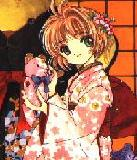

Professional Profile
Personal Profile
Hobbies
Professional Profile
Go to top
Professional Profile
I am a software developer with nearly
thirty years experience in full cycle projects, who supports, maintains
and improves existing systems applications in both the Windows and Unix worlds. My technical experience includes: seven years coding with Visual Basic for applications, Sql Server; five years maintaining two oracle applications, modifying Oracle*forms PL/SQL, writting report's programs in Oracle Pro* Precompiler product (Pro*C) under Unix operating system; Five years developing programs with Sql Server, administrating an sql server database using Ole sps, vbscript, sql, data definition language DDL and data Manipulation Language SQL-transact DML, and most recently creating ASP pages connected to Sql Server and oracle databases.
Soft skills
I am results oriented, highly organized and responsible programmer,
I am able to pick up new systems information quickly and complete all assignments on time. A part from that, I have the ability to learn new
technologies quickly.
Personal Profile
Hobbies
Go to top
Personal Profile
My name is Catalina Manjarrés. I was born in Colombia. I am a latin girl, 1.65 mts tall, friendly, warm, serious but with good sense of humor, determined, independent, organized, honest, with good imagination, creative, well educated. I speak Spanish and English.
Hobbies

I like traveling, long walks, listen to music, songs from eighties till now, cooking (Canadian and Colombian food), parties, playing guitar, movies, theater, art, sports (swimming pool, volleyball), learning ice skating, and skiing, dancing and doing some academic activities.
Professional Profile
Hobbies
Go to top
Copyright © 2001-2008 Cat.